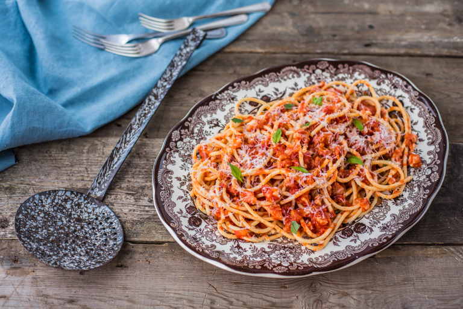

Description
Quick, simple, and utterly delicious, this bucatini all'amatriciana recipe – like many other classic Italian pasta dishes – stands the test of time. The secret to success in this dish lies in its quality ingredients – the beautiful guanciale, Pecorino Romano and San Marzano tomatoes make all the difference.
Ingredients
- 100g of guanciale, or good quality pancetta, diced into 0.5cm cubes
- 400g of San Marzano tomatoes, (1 tin)
- 1/2 onion, diced (optional)
- 1/2 red chilli, diced (optional)
- 50ml of white wine
- olive oil
- 400g of bucatini pasta
- Pecorino Romano, to grate on top
- basil leaves, torn
Steps
- To begin, slowly heat the diced guanciale with a tablespoon of olive oil over a medium-low heat. If using onions and chilli, add them to the pan to soften in the rendered fat, cooking them until soft but without colour
- Once the guanciale is lightly golden, add the white wine and reduce by three quarters
- Add the tin of tomatoes (if using whole tomatoes, roughly chop them first)
- Cook down on a low heat for 10–15 minutes until the sauce has thickened. Taste and add salt and a pinch of sugar if necessary
- Cook the pasta in a pan of heavily salted boiling water for 8–10 minutes, or as per packet instructions
- Once the pasta is al dente, drain and add it to the sauce, tossing to make sure the pasta is evenly coated
- Serve straight away with plenty of grated Pecorino Romano and some torn basil leaves